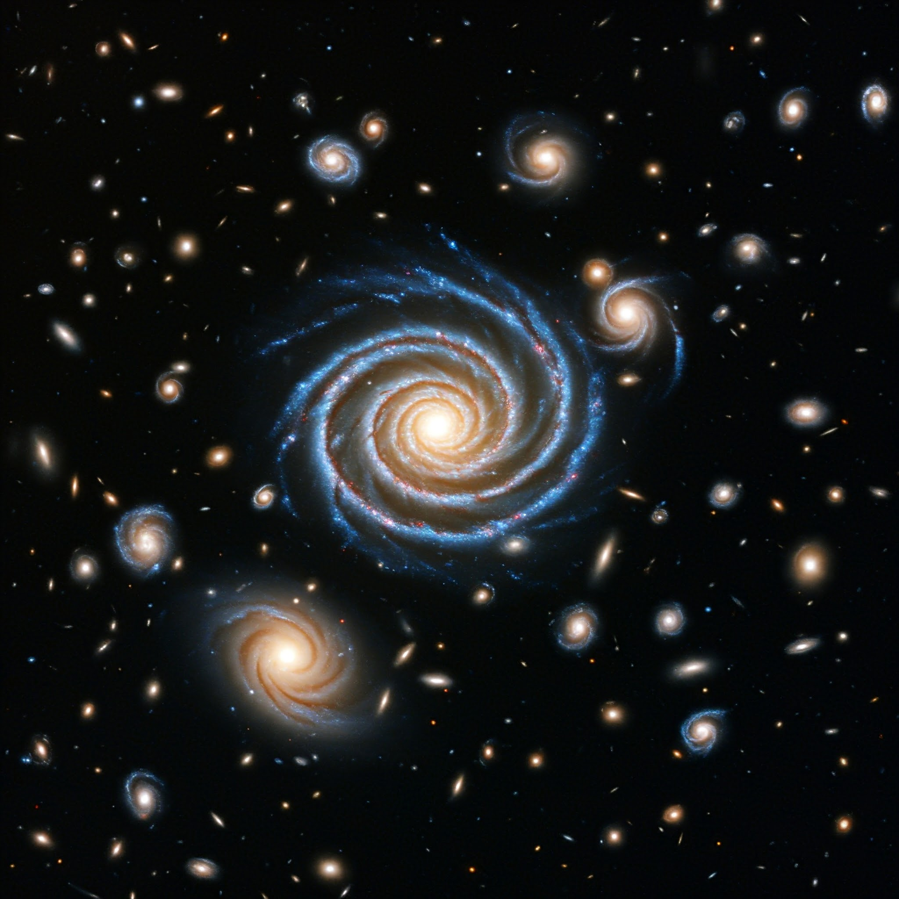
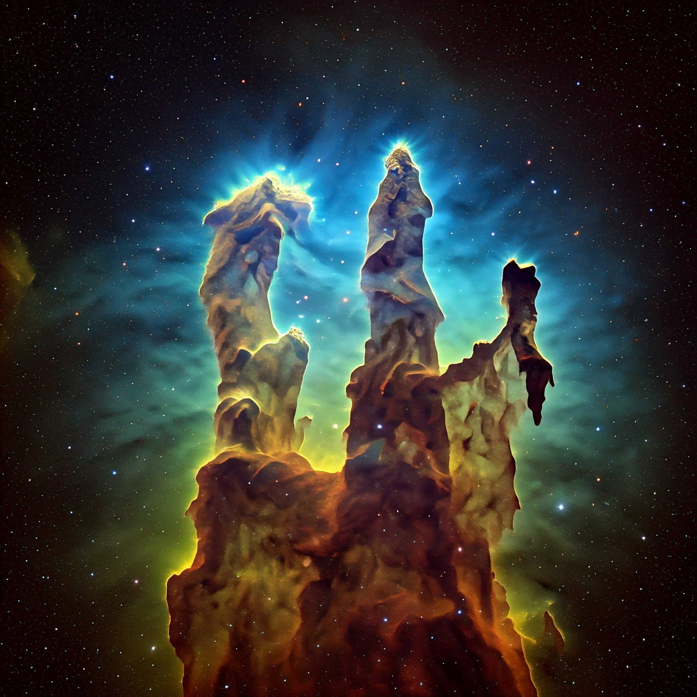
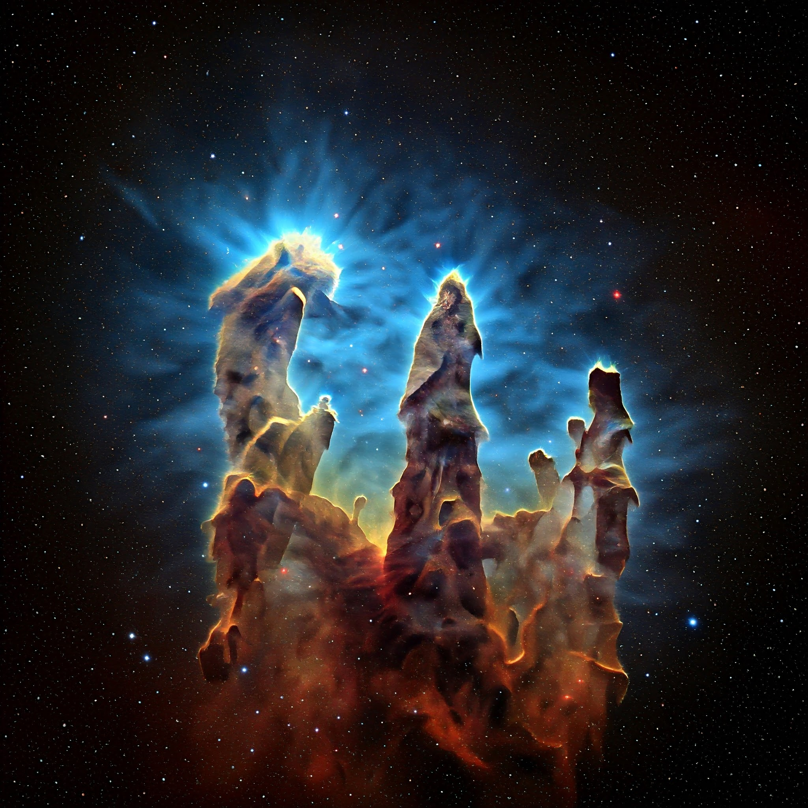
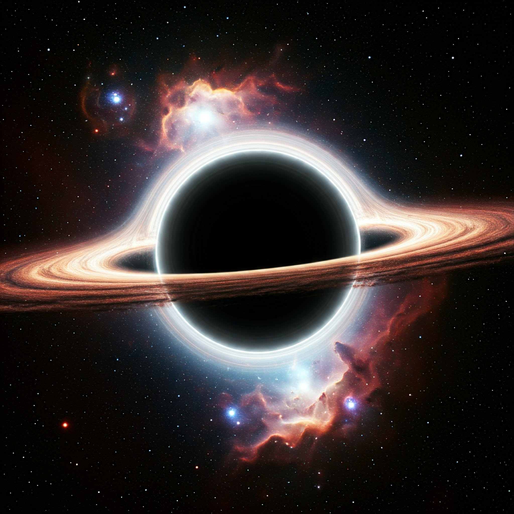
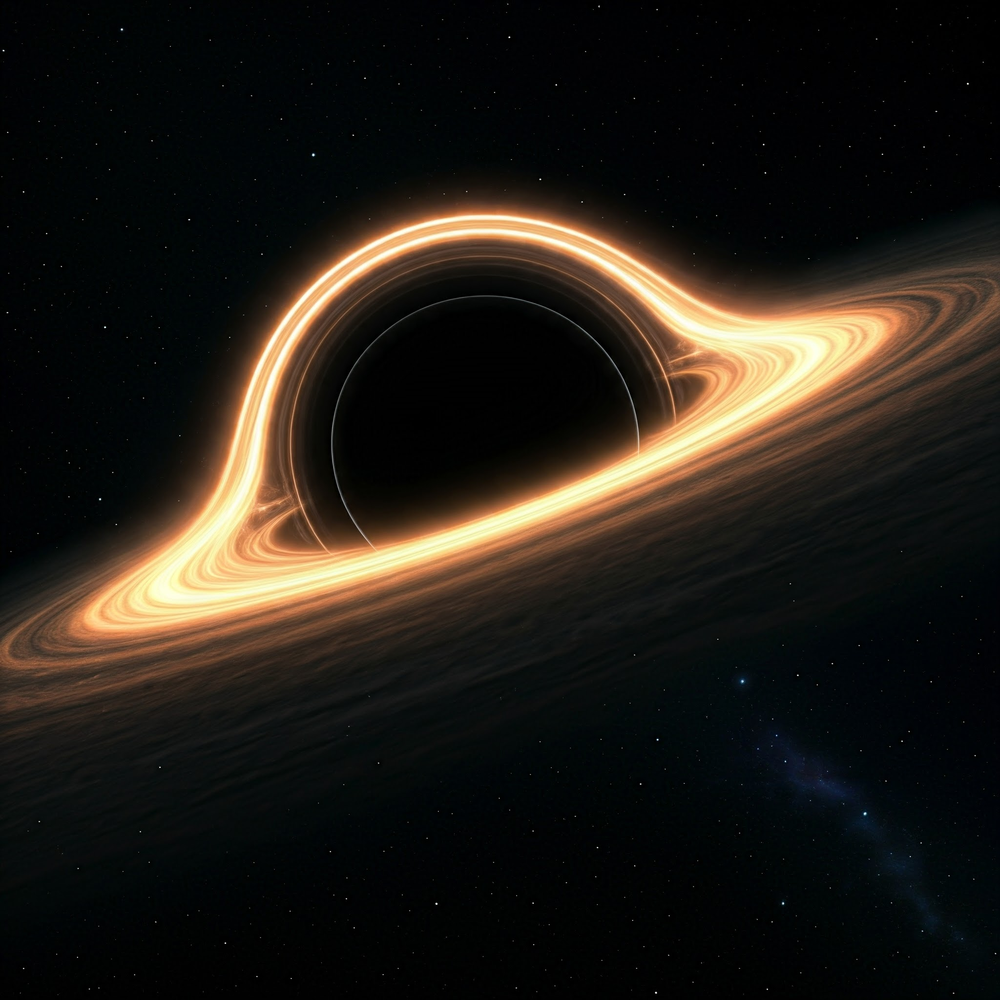
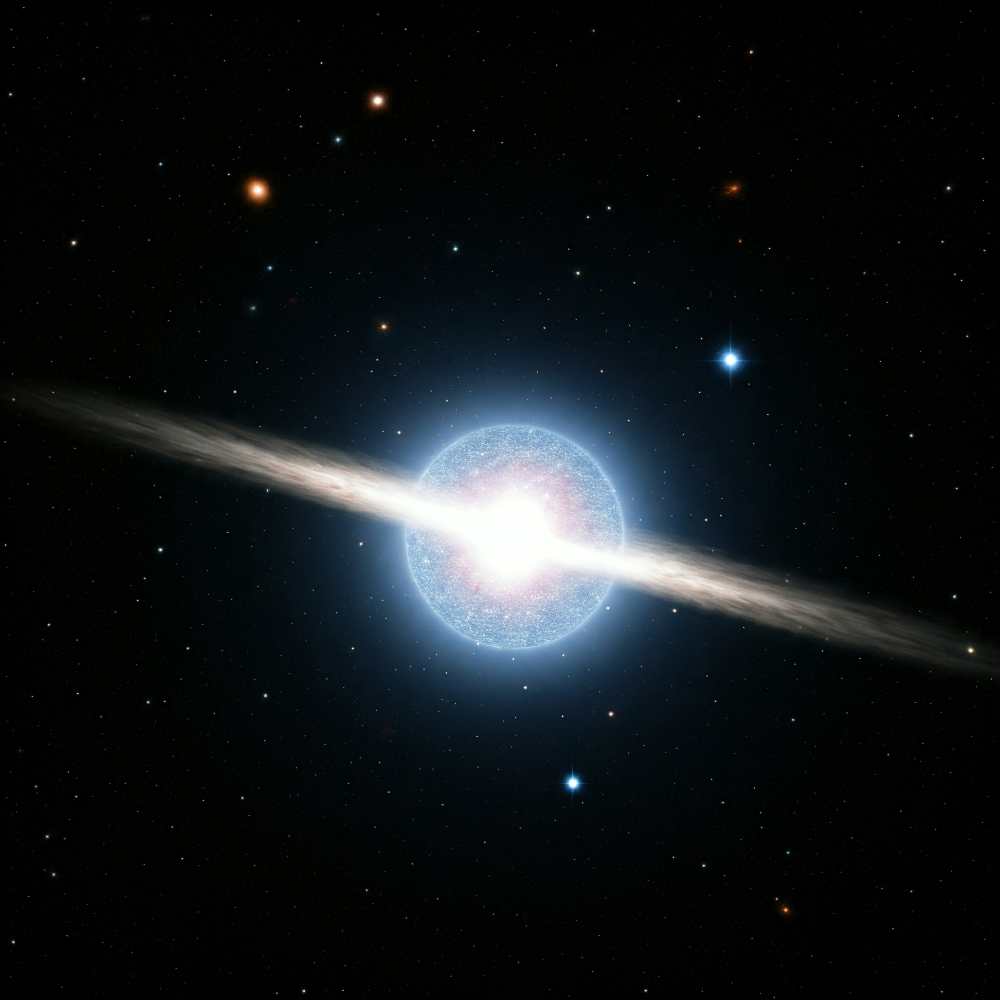
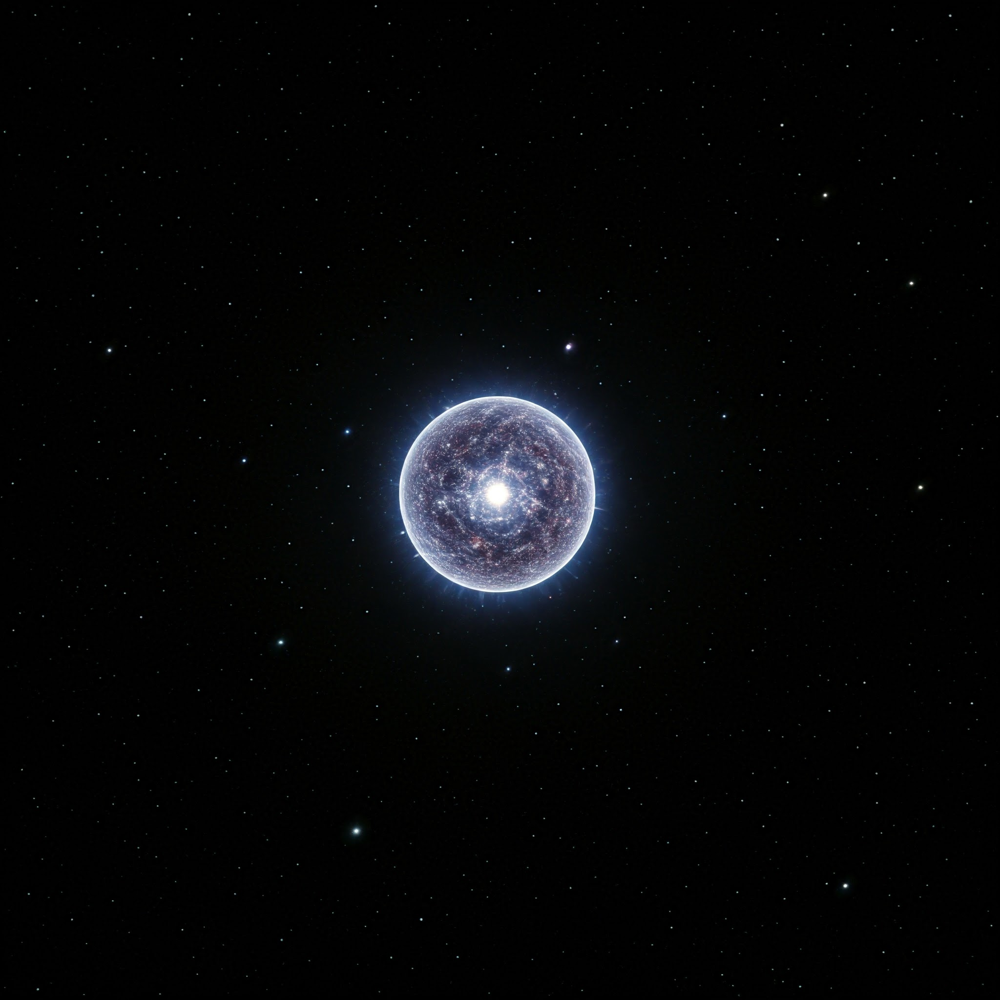
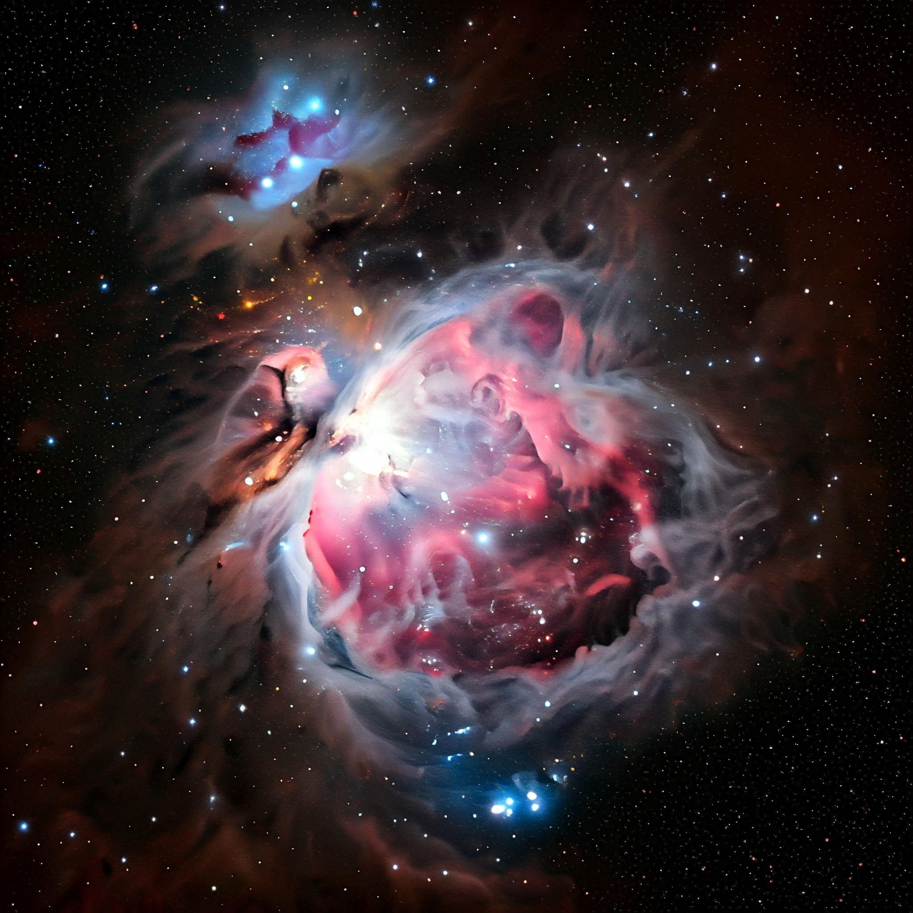
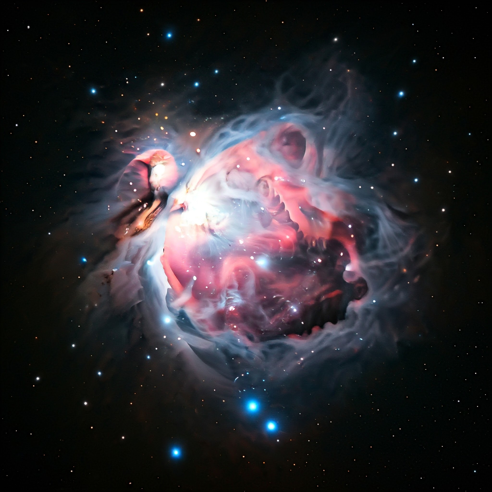

As galáxias são enormes sistemas compostos por estrelas, planetas,
gases, poeira e matéria escura, unidos pela gravidade. Elas podem ter
formas variadas, como espirais, elípticas ou irregulares. A nossa
galáxia, a Via Láctea, é uma espiral que contém bilhões de estrelas,
incluindo o Sol.
Informações sobre Galáxias
As galáxias são vastos sistemas cósmicos que contêm estrelas, planetas,
gás e outros objetos astronômicos. Elas se formaram bilhões de anos
atrás e são agrupadas de acordo com sua forma, como galáxias espirais
(exemplo: Via Láctea), galáxias elípticas e galáxias irregulares.

As galáxias se formaram logo após o Big Bang, há cerca de 13,8 bilhões
de anos. As primeiras galáxias surgiram a partir de pequenas flutuações
na distribuição de matéria, que se agruparam sob a ação da gravidade.
Com o tempo, essas galáxias evoluíram e passaram por processos como
fusões e interações que alteraram sua forma e estrutura.
Pilares da Criação
Os Pilares da Criação são uma famosa estrutura situada na Nebulosa da
Águia (M16), a cerca de 6.500 anos-luz da Terra, na constelação de
Serpens. Trata-se de vastas colunas de gás e poeira interestelar que
estão em processo de formação estelar.

Os Pilares da Criação: Berços de Estrelas
Uma obra e arte cósmica
Os Pilares da Criação são uma das imagens mais icônicas e fascinantes já
capturadas pelo telescópio Hubble. Essas gigantescas estruturas,
localizadas na Nebulosa da Águia, a cerca de 7.000 anos-luz da Terra,
são verdadeiros berçários estelares, onde novas estrelas estão
constantemente se formando.

Como se formam
A formação dos Pilares da Criação é um processo contínuo e dinâmico. A
intensa radiação ultravioleta emitida por estrelas massivas próximas
erode lentamente as colunas de gás e poeira, esculpindo formas
espetaculares e complexas. Ao mesmo tempo, a radiação também desencadeia
o colapso gravitacional do material dentro dos pilares, dando origem a
novas estrelas.
Buracos Negros

Buracos negros são regiões do espaço-tempo com uma gravidade tão
intensa que nada, nem mesmo a luz, pode escapar de sua atração. Eles
se formam quando estrelas massivas colapsam sob sua própria gravidade
no final de seu ciclo de vida.
O que é um buraco negro?
Um buraco negro é uma região do espaço-tempo com uma gravidade tão
intensa que nada, nem mesmo a luz, pode escapar dele. O conceito de
buraco negro deriva das leis da relatividade geral de Albert Einstein,
que prevê que a gravidade pode curvar o espaço-tempo ao ponto de criar
uma "caverna" onde a gravidade é forte demais para qualquer coisa
escapar.

Características principais
Singularidade: No centro de um buraco negro existe um ponto chamado
singularidade, onde a densidade é infinita e as leis da física, como as
conhecemos, deixam de ser aplicáveis. Aqui, a curvatura do espaço-tempo
se torna infinita.
Horizonte de eventos: O "limite" do buraco negro é chamado de horizonte
de eventos. Tudo o que cruza esse limite não pode mais escapar, nem
mesmo a luz. Uma vez que algo ultrapassa o horizonte de eventos, ele
está irremediavelmente atraído para a singularidade.
Estrelas de Nêutrons
Estrelas de nêutrons são remanescentes extremamente compactos e densos
de estrelas massivas que passaram por uma supernova, ou seja, uma
explosão estelar. Quando uma estrela com massa entre 8 e 20 vezes a do
Sol chega ao fim de sua vida, ela sofre um colapso gravitacional tão
intenso que sua matéria é comprimida a ponto de os elétrons e prótons
se fundirem, formando nêutrons.

Estrelas de Nêutrons: Gigantes Densas Escondidas no Universo
Imagine um objeto tão denso que uma colher de chá de sua matéria pesaria
bilhões de toneladas. Esse é o mundo das estrelas de nêutrons, um dos
objetos mais extremos e fascinantes do universo.

Propriedades Incríveis:
Densidade Extrema: As estrelas de nêutrons são os objetos mais densos
conhecidos, exceto possivelmente os buracos negros. A matéria dentro
delas é tão compactada que os prótons e elétrons se combinam para formar
nêutrons, criando uma espécie de "sopa" de nêutrons.
Campo Magnético Intenso: Estrelas de nêutrons possuem os campos
magnéticos mais intensos do universo, bilhões de vezes mais fortes que o
campo magnético da Terra.
Buraco de minhoca
O "buraco de minhoca" é uma teoria da física que descreve um atalho
hipotético no espaço-tempo, permitindo a viagem entre dois pontos
distantes do universo. A ideia é baseada na relatividade geral de
Einstein, que prevê que o espaço-tempo pode ser curvado por massa e
energia.
Buracos de Minhoca: Pontes para Outros Mundos?
Buracos de minhoca são hipotéticos atalhos no espaço-tempo, como túneis
que conectam dois pontos distantes do universo. Imagine o espaço-tempo
como um tecido elástico.
Por que são tão Fascinantes?
Viagens no Tempo: Alguns teóricos sugerem que buracos de minhoca
poderiam ser usados para viajar no tempo, permitindo que alguém viajasse
para o passado ou para o futuro.
Viagens Interestelares: Buracos de minhoca poderiam ser utilizados para
realizar viagens interestelares em escalas de tempo muito menores do que
seria possível com a tecnologia atual.
Nebulosa
Uma nebulosa é uma vasta nuvem de gás e poeira no espaço, geralmente
formada por hidrogênio, hélio e outros elementos. Elas são locais
importantes para a formação de novas estrelas e sistemas planetários.
Existem diferentes tipos de nebulosas

Nebulosas: Berços de Estrelas e Resquícios Cósmicos
Nebulosas são imensas nuvens cósmicas compostas principalmente por gás
(hidrogênio e hélio) e poeira. São verdadeiros berçários estelares, onde
novas estrelas nascem a partir da contração e aglutinação desse material

Tipos de Nebulosas:
Nebulosas de Emissão: Brilham intensamente devido à radiação
ultravioleta emitida por estrelas quentes em seu interior.
Nebulosas de Reflexão: Não emitem luz própria, mas refletem a luz
de estrelas próximas. Geralmente, essas nebulosas possuem um tom
azulado, pois a poeira cósmica espalha a luz azul com mais eficiência
que as outras cores.
Nebulosas Planetárias: São os restos de estrelas de massa média, como o
nosso Sol, no final de suas vidas. Essas estrelas ejetam suas camadas
externas, formando uma nebulosa que se expande lentamente.